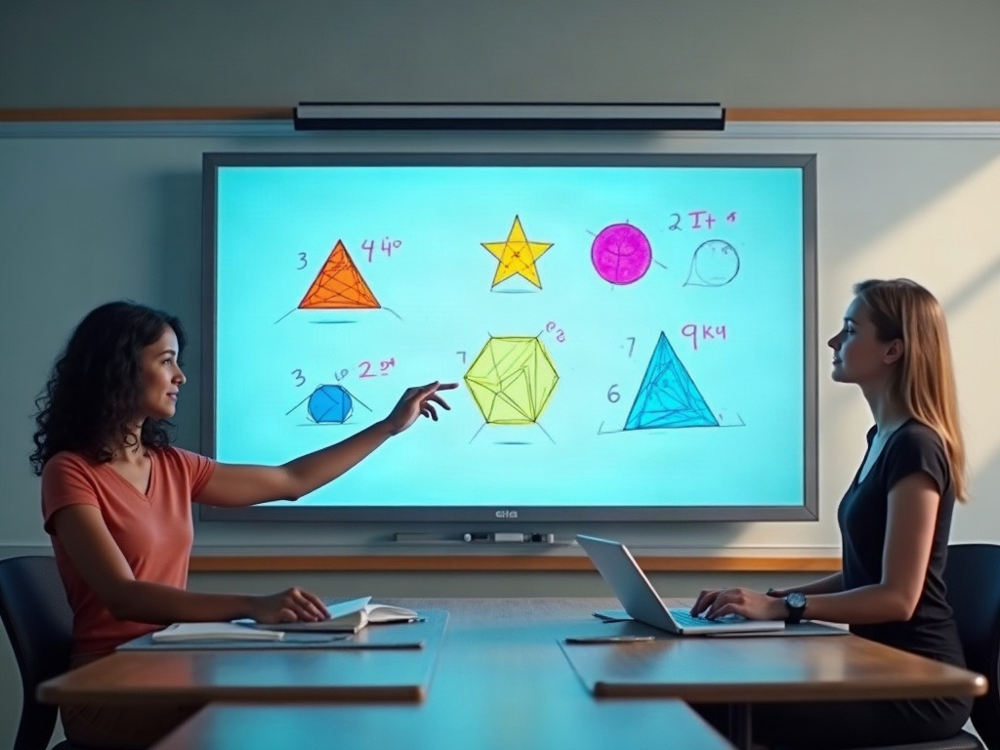

Kitabın bittiği yerde teknoloji başlar.
Geleceğin eğitim teknolojilerini bugüne taşıyoruz. Yapay zekâ destekli altyapımızla her öğrenciye özel ve dinamik bir öğrenme deneyimi sunarak başarıyı en üst düzeye çıkarmayı hedefliyoruz.

Yapay zekâ destekli sınav analizi
Her denemeden sonra öğrenci, öğretmen ve veli aynı karneye bakar: hangi konu tamam, hangisi tekrar istiyor, sırada hangi test var.
LGS Türkiye Geneli Deneme 1
Öğrenci karnesi, örnek öğrenci, 8-B
Ders netleri
Matematik, konu bazlı başarı
- Yapay zekâ destekli akıllı öğrenmeYanlış cevaplar konu ve kazanım düzeyinde eşleştirilir; öneri her öğrenciye ayrı çıkar.
- Dinamik ve kişiselleştirilmiş içerikÖnerilen test ve videolar Tesla kitaplarının kendisinden gelir.
- Anlık performans değerlendirmeOptik okumadan sonra karne panelde, veliye gönderilmeye hazır.
- Kapsamlı veri analizi ve raporlamaDeneme deneme gelişim grafiği; sınıf ve kurum karşılaştırması.
Tesla Yayınları sayesinde hangi konulara odaklanmam gerektiğini net bir şekilde gördüm. Sistem, yanlışlarımı analiz edip bana özel çözümler sunuyor.
Sınıfta, evde, cepte
Aynı içerik her ekranda: öğretmenin akıllı tahtasında, öğrencinin telefonunda, velinin karnesinde.
Dijital içerik kütüphanesi
Konu anlatımları, yaprak testler ve ucu açık sınavlar tek arşivde.
Akıllı tahta uygulaması
Kitap sayfası tahtada; cevaplar ve çözümler tek dokunuşla.
Video çözümler
Binlerce sorunun tamamı video çözümlü, QR kodla açılır.
Mobil uygulama
Deneme sonuçları, karne ve öneriler öğrencinin cebinde.

Akıllı tahta uygulaması
Öğretmen kitabın sayfasını tahtaya yansıtır, soruyu büyütür, üzerine yazar; cevabı ve video çözümü tek dokunuşla açar.
- Tüm Tesla kitapları dijital olarakSınıftaki kitabın birebir aynısı.
- Kalem, vurgulama ve perde araçlarıDers anlatımı için hazır.
Video çözümler ve dijital kütüphane
Deneyimli eğitimcilerin anlatımıyla her soru adım adım çözülür. Kütüphanede konu anlatım videoları, yaprak testler ve ucu açık sınavlar sınıf ve ders bazında düzenlidir.
Tesla Yayınları mobil uygulaması
Öğrenci deneme sonuçlarını, kişisel karnesini ve çalışma önerilerini telefonundan takip eder; QR kodları okutarak video çözümlere ulaşır.
- Deneme sonuçları ve gelişim grafiğiHer denemeden sonra bildirim.
- QR ile video çözümKitaptaki kodu okut, çözümü izle.